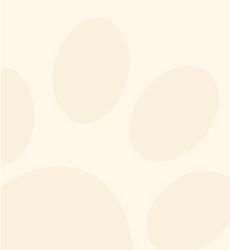
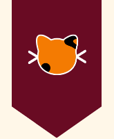
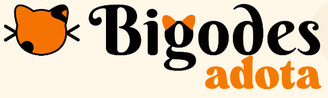

Protetores dos gatinhos de Lavras-MG 🐱
O Projeto Bigodes é um grupo de protetores independentes que cuida dos felinos de Lavras-MG. Trabalhamos de forma voluntária para tirar gatinhos de situações de risco e dar a cada um deles a chance de recomeçar em uma família de verdade.
Atendemos gatinhos abandonados, feridos ou em situação de risco nas ruas de Lavras.
Castração é a forma mais eficaz de controlar a população de rua e evitar mais abandono.
Voluntários acolhem os resgatados em casa enquanto eles se recuperam e esperam adoção.
Encontramos famílias comprometidas, com orientação e acompanhamento para cada bigodinho.
A adoção é gratuita e responsável: conversamos com você para encontrar o gatinho ideal pro seu momento de vida. É simples:
Todo o trabalho é voluntário e mantido por doações. Ração, medicamentos, castrações e tratamentos só acontecem com a sua ajuda. 🧡
Qualquer valor no Apoia.se garante ração e cuidados contínuos para os resgatados.
Abra sua casa por um tempinho: acolher um resgatado salva a vaga pro próximo resgate.
Siga e compartilhe nossos gatinhos no Instagram — divulgação também salva vidas.